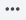

View alarms#
You can read about settings of tags and alarms in this article.
You can manage permissions for alarms in the View alarms menu.
The View alarms subsection has three tabs:
- ALARMS
Displays available alarms by their location in a project. - CATEGORIES
Displays available alarm categories - PRIORITIES
Displays precedence levels.
This allows you to choose the way of managing permissions. You can set permissions for particular tags, or groups which can be organised either by categories or priority levels.
The Manage permissons dialogue menu has four tabs:
- Name
This column is a list of project users. - Visible
This checkbox defines an alarm's visibility to a user or users. - Acknowledge
This flag allows you to set whether a user can acknowledge an alarm. - Without comments
This option defines whether a user can acknowledge alarms without leaving a comment.
Click the Create alarm category button in the upper-right corner of the CATEGORIES tab. Clicking More options  opens a dialog where you can manage permissions for a category, view the category's content, and delete the category. Each category's content can be viewed by clicking the Show alarms in this category button.
Parent article:
- Portal Projects
Brief information about the Projects section.
Related articles:
- Alarms
In this article: alarms and what they do. You'll find out what does "acknowledge alarm" mean and what shelved and monitored alarms are. - Alarm editor
Describing alarm properties which can be edited with the Alarm editor.